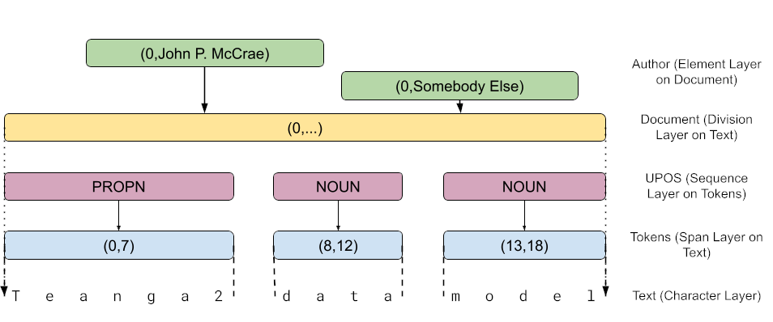

Teanga Core and DB
Teanga is a database and system designed for NLP with pretrained language models.
Teanga 2 Data Model
The core idea of Teanga2 is the data model which descibes how the data is represented and processed by services and stored in Teanga2 backends.
Layers
The Teanga2 data end consists of a set of layers that provide annotations. Layers are typed into the following kinds
- Character Layers: These layers represent text. A character layer consists of the unicode characters in that layer and the indexes correspond to each Unicode character. As such, while these layers are most frequently encoded as UTF-8, other encodings can be handled as well.
- Span Layers: Span layers consist of annotations with a start position, end position and a data value. The indexes refer to the position in the sublayer. Span layers are the most flexible form of annotation and are typically used to represent tokenisation and annotations such as named entities and terms.
- Division Layers: Division layers have a start position and a data value. The end position of a div layer is assumed to be the start position of next annotation in this layer or the largest index in the sublayer. Div layers are typically used to divide the text into sections such as sentences, paragraphs and chapters
- Element Layers: Element layers have a start position and a data value. The end position is assumed to be the start position plus one. Element layers are most typically used for indicating metadata properties and a few annotations
- Sequence Layers: A sequence layer has only a data value on each annotation. Sequence layers are assumed to be in one-to-one correspondance with the indexes of the sublayer. These are typically used when there is a value for every word (or sentence or paragraph) such as in part-of-speech tagging.

An example of each layer type is given in the above image and can be represented in YAML as follows:
_meta:
text:
type: characters
tokens:
type: span
base: text
upos:
type: seq
base: tokens
data: ["ADJ", ... "X"]
document:
type: div
base: text
default: [[0]]
author:
type: element
base: document
data: string
VC90:
text: "Teanga2 data model"
tokens: [[0,7], [8,12], [13,18]]
upos: ["PROPN", "NOUN", "NOUN"]
author: [[0, "John P. McCrae"], [0, "Somebody Else"]]
Data
Each annotation in a Teanga 2 layer can have data. The folllowing types of data are available
- None: No data is associated with annotation. This is frequently used for layers that only divide the text, such as tokens, sentences or chapters
- String: A string value, such as the lemma for an entry.
- Enumeration: A string value, but limited to a list of possible values.
- Link: A reference to another annotation. If not specified this link is
assumed to refer to an annotation in the same layer by its index, however you
may specify another layer by means of the
targetproperty. - Typed Link: A link with a type, combines the enumeration and link data types
As an example consider this (simplified) encoding of Universal Dependencies data
_meta:
text:
type: characters
words:
type: span
base: text
data: none
upos:
type: seq
base: words
data: ["DET","NOUN","VERB"]
dep:
type: seq
base: words
data: link
link_types: ["root","nsubj","dobj"]
target: dep
kOJl:
text: "this is an example"
words: [[0,4], [5,7], [8,10], [11,17]]
upos: ["DET", "VERB", "DET", "NOUN"]
dep: [[1, "nsubj"], [1, "root"], [2, "det"], [1, "dobj"]]
In addition, the metadata may define a value for the layer. In this case,
the layer does not need to be specified in the document and will be assumed
to be the default value. The primary use for this is in defining document
layers as above
Corpus Model
The corpus model of Teanga2 consists of a (ordered)
sequence of documents which in turn
consists of an (unordered) sequence of words. In addition, there are two meta
properties _meta and _order which give the layer descriptions and the
order of the documents in the text.
Each document is indexed by initial characters
the Base64 encoding of the SHA-256 of the UTF-8 representation of the text. The
text representation consists of all character layers ordered by their key with
the key appended before the text. Keys and text should be separated by a zero byte (\u0000).
For example the following document:
en: Hello!
de: Guten Tag!
The string to encode is as follows:
from base64 import b64encode
from hashlib import sha256
rep = "de\x00Guten Tag!\x00en\x00Hello!\x00"
b64encode(sha256(rep.encode("utf-8")).digest()).decode("ascii")
'SpKHmfUJ1IkFXito5Me/ssLZ0Xx+ma5jjXTDb2qXs88='
By default only the first 4 characters of the key are used so the representation of this document would be
SpKH:
en: Hello!
de: Guten Tag!
All keys in the document should be unique and are used to check the validity of the input.
These keys are used by the _order meta to give the order of documents. In
many serializations this may be omitted and instead the order of the keys in
the document may be used instead of an explicit order.
Documentation and RDF
Teanga2 is linked-data-aware and this can be used to provide documentation to
the user. This can be done with the special _uri property that can appear at
several points in the document
_meta:
_uri: https://jmccrae.github.io/teanga2/meta/basic.yaml
author:
base: document
data: string
_uri: https://jmccrae.github.io/teanga2/props/author.html
jjVi:
_uri: corpus/doc1.yaml
As a property directly under _meta this indicates that this format will build
on another model and includes all the layers of that corpus into this corpus.
As a property of a layer, it indicates an description of the property. This should ideally refer to an HTML page with embedded Turtle or RDFa annotation.
If put directly as a document, this indicates that the document is stored in another file and the YAML document is effectively copied directly in as this document.